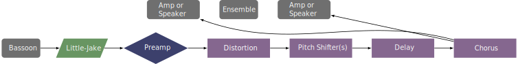

This piece was written for Gabriel Beavers and was premiered on September 23, 2014. It is five movements long and is orchestrated for electric bassoon, two percussionists, and strings. The piece is about Lascaux cave and the destruction of its prehistoric art. The piece can be purchased from Beauport Music.
This piece calls for a distortion or fuzz effect, pitch shifting up a perfect fifth and up an octave, a stereo delay, and a chorus effect. The composer also recommends a small amount of reverb for times when there are no other effects added to the bassoon sound. The score includes this suggested order of effects: distortion, pitch shifter(s), delay, and chorus. The score also recommends placing two speakers behind the ensemble, slightly higher than their heads. Gabriel Beavers has videos on YouTube demonstrating his electronics setup, which is through an iPad that would route to a PA system. Certainly traditional effects pedals and amps could be used.
A setup diagram for this piece is shown below. As the piece is about prehistoric artwork found in the cave, there are also videos and still photographs that can be projected during the performance. The score also indicates that puppets, actors, or dancers could be included as part of the performance. 
The technical aspects of this piece can be rather demanding. The first, fourth, and fifth movements are easier, while the second and third movements feature very fast scalar passages. The third movement also has some extended high range passages. The electronics are not too difficult in this piece; most effects are active for long periods of time, and the transitions between effects are not close together. This could be a great first piece for someone already performing at a high level who wants to add some electronics to their playing.
Overall the limiting factor for this piece is the technical facility of the performer with fast (thirty-second notes at a tempo of ninety-two beats per minute) passages in some movements. The other movements would certainly be in the range of an undergraduate student to perform.
The style of this piece is very accessible, and it would be a great piece for any audience.
©2025 by Benjamin Bradshaw
Logo ©2025 by Hannah Bradshaw